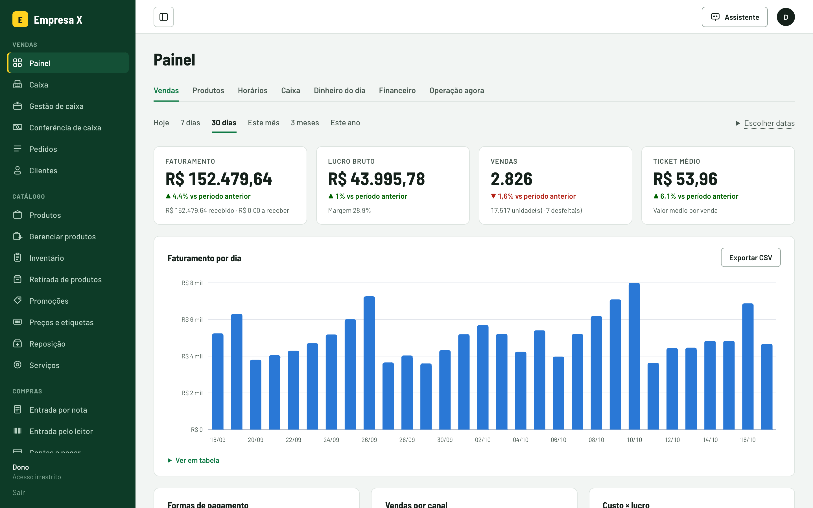
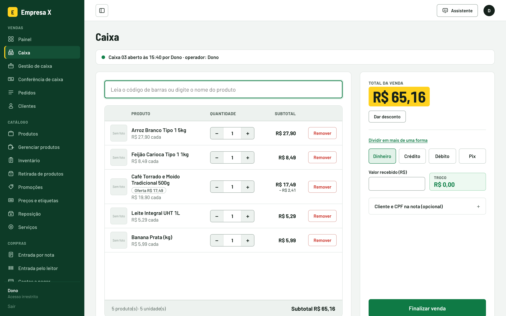
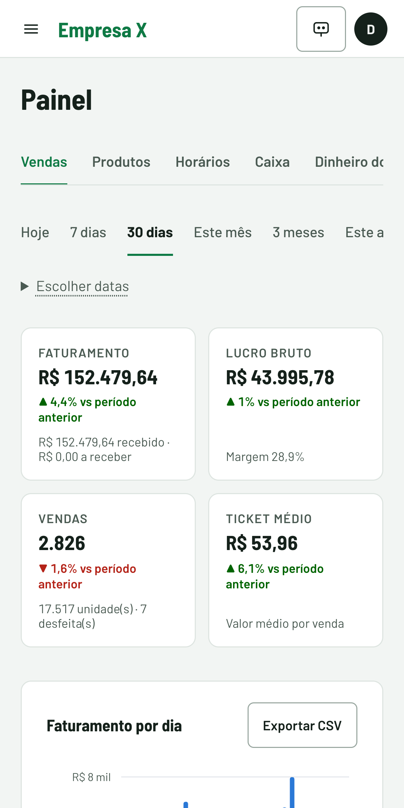
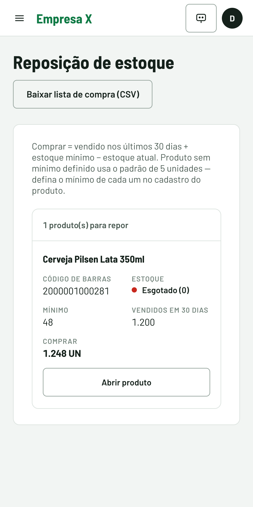
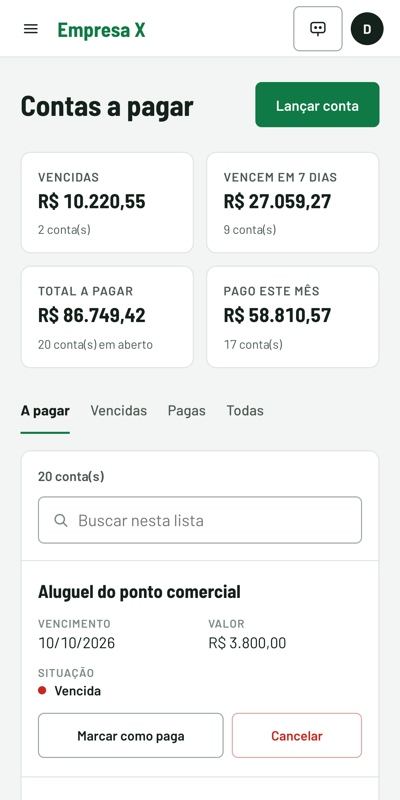
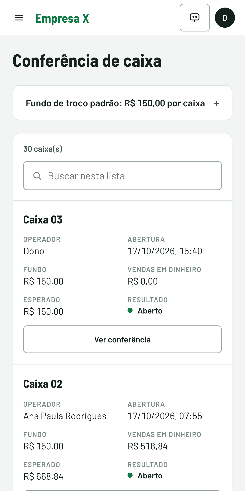
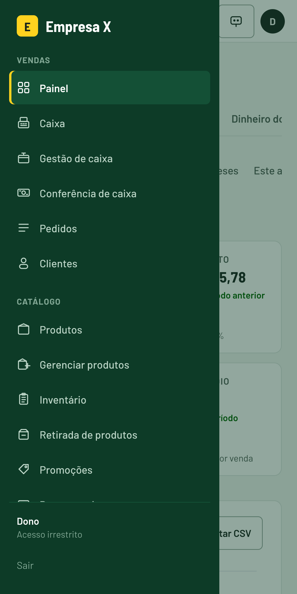
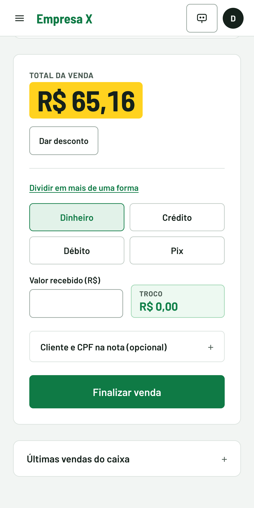

O sistema do mercado: vendas, caixa, estoque e contas num lugar só — no computador e no celular.

Feito para quem toca o dia a dia da loja: simples para o caixa, completo para o gerente, claro para o dono.
Leitor de código de barras, ofertas aplicadas sozinhas e troco calculado.
Quanto vendeu, quanto lucrou e o que mais sai — num toque.
Avisa o que está acabando e monta a lista de compra.
A nota do fornecedor vira estoque e boleto a pagar.
Abertura, sangria e fechamento com contagem das cédulas.
Cada funcionário vê só o que precisa para o seu trabalho.
Os prints deste documento usam dados de demonstração.
Empresa X2O operador passa os produtos, o sistema faz as contas.

Abra o celular e saiba como o mercado está indo.

Cada venda baixa o estoque sozinha. Você só decide o que comprar.

A mercadoria que chega e as contas que vencem, no mesmo lugar.

Cada caixa abre com o fundo de troco e fecha com a contagem das cédulas.

Tudo o que funciona no computador funciona no celular, com telas pensadas para o dedo.

Menu completo no ☰

Caixa no celular
Um a um, pelo leitor, ou direto pela nota do fornecedor.
Cada funcionário com o seu acesso: caixa, gerente, financeiro.
Informe o fundo de troco e o caixa está pronto.
systemsuperrmarket.netlify.app
Abra no computador ou no celular e entre com o seu e-mail e senha.